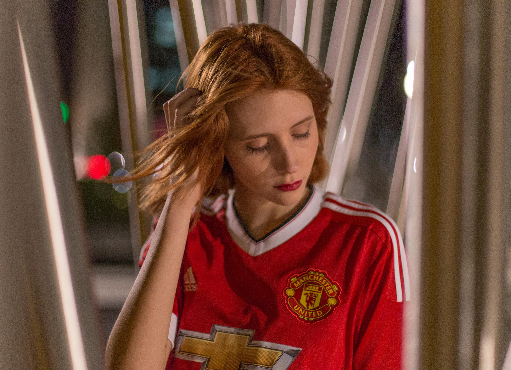

From before kick-off at St Mary’s, to the aftermath of the final whistle, the supporters inside the packed out away end made themselves heard as they returned in earnest for the first time in almost a year and a half.
Their encouragement was unwavering after Ole Gunnar Solskjaer’s side went behind to an own goal in the first half and no doubt helped the team find a leveller though Mason Greenwood after the interval.